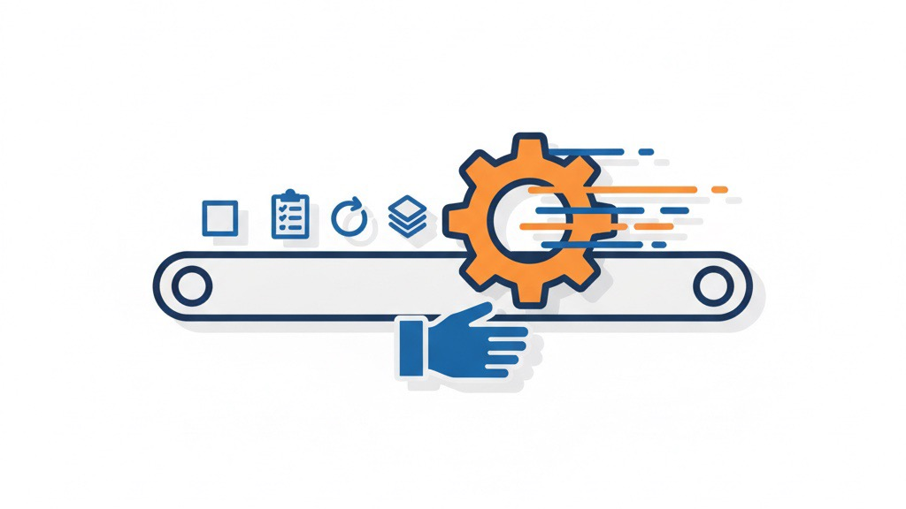
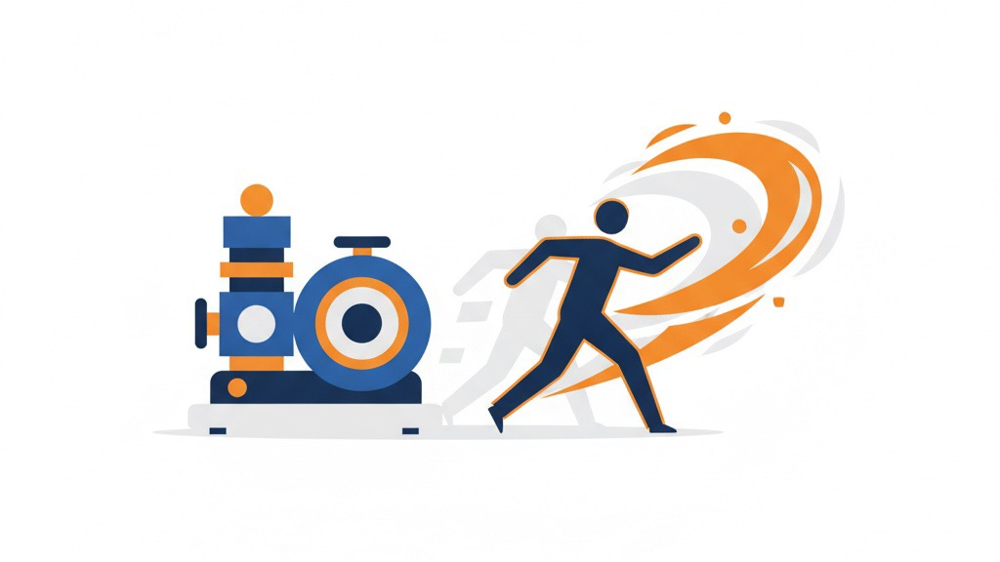

定例業務を仕組みで消す
私たちが実際に止めた「毎日の手作業」とその設計図
業務改善コラム ／ 仕組み化・自動化 ／ 読了目安：約10分
うちは少人数の会社です。人を増やさずに複数のブランドと支援先を回すために、
「毎日・毎週かならず発生する手作業」を一つずつ仕組みに置き換えてきました。
この記事では、実際に自動化した業務の中身と、業種を問わずそのまま真似できる「自動化の型」を、できるだけ具体的に書きます。道具の名前ではなく、「どう考えて、どう減らしたか」だけの話です。
1. なぜ少人数の会社が「自動化」に賭けたのか
先に言っておくと、私は「最新の道具が好きだから」自動化を進めたわけではありません。 理由はもっと切実で、少人数では、手作業の量がそのまま事業の上限になってしまうからでした。
自社ブランドの販売、広告の運用、経理、SNS、お客様への連絡——これを全部「人が毎日手で」やろうとすると、 新しいことに使える時間がゼロになります。人を増やせば解決するように見えますが、小さな会社にとって採用は重い決断やし、 増えた人の管理にもまた時間がかかる。
そこで考え方を変えました。「人を増やして作業をこなす」のではなく、「作業そのものを減らして、人にしかできないことに集中する」。 この一点に絞って、社内のあらゆる定例業務を見直してきました。その結果が、これから紹介する仕組みです。
やってみて思うのは、「規模が小さいからこそ自動化が効く」ということです。大企業のような大がかりな仕組みは要りません。 小さな会社の小さな繰り返しこそ、いちばん手早く・安く・確実に減らせます。
2. 私たちが実際に自動化した6つの業務
まずは「何を自動化したのか」を正直に並べます。どれも特別な業務やありません。 どの会社にもある「毎回同じことの繰り返し」です。それぞれ「before（前）→ after（後）→ 他社ならこう使える」の順で書きます。
Before：毎朝、広告の管理画面に複数ログインし、昨日の広告費・売上・効率を1つずつ目で確認して手元の表に転記。気づけば30分。しかも見落としや転記ミスが起きる。
After：昨日の数字を自動で集計し、その日の状態がチャット（Slack）に文章で届くようにしました。管理画面を開かなくても、コーヒーを淹れながら状況がわかる。判断にだけ頭を使えるようになりました。
他社への応用：毎朝の売上速報、店舗別の前日比、予約数の集計——「毎朝、複数の画面を見て回っている」業務はすべて同じ形に置き換えられます。
Before：競合商品の検索順位・価格・在庫を、手で検索して目視チェック。毎日やると続かないし、やらないと変化を見逃す。
After：毎日決まった時間に自動で順位・価格・在庫を取得し、変化があったときだけ、見やすい表の画像つきでチャットに通知。普段は静かで、動きがあったときだけ気づけます。
他社への応用：競合の価格改定、求人サイトでの相場、自社の口コミ評価——「定期的に見張りたいが、毎日は見ていられない」対象すべてに使えます。
Before：通販の売上明細を見ながら、会計ソフトへ仕訳を1件ずつ手入力。件数が多い月は丸一日。単純作業なのに神経を使う。
After：売上データを整え、会計ソフトへの仕訳をほぼ自動で投入できるようにしました。人は「中身が正しいかの確認」だけを担当します。
他社への応用：請求書の発行、立替経費の集計、勤怠の集計——「決まった様式へ数字を写すだけ」の作業は、ほぼ自動化の対象です。
Before：毎日決まった時間にスマホを開いて投稿。忙しい日は抜け、投稿時間もバラバラになる。
After：投稿をまとめて用意しておけば、最適な時間に自動で配信される形に。「投稿し忘れ」が構造的に起きなくなりました。
他社への応用：定休日のお知らせ、季節の案内、定期的な念押しの連絡——「言うことは決まっているのに、送るのを忘れる」連絡に最適です。
Before：登録してくれたお客様への案内を、その都度手作業で送る。人によって対応にムラが出る。
After：友だち登録から段階的な案内の配信までを自動化。問い合わせ対応のような「人がやるべき部分」だけを手元に残しました。誰が対応しても一定の品質で届きます。
他社への応用：来店後のお礼、申込後の案内、見込みのお客様への段階的な情報提供——「最初の何通かは毎回同じ」フォローは仕組み化できます。
Before：自動化を組んだはいいが、止まっていても誰も気づかない。気づいたときには数日分のデータが欠けている。
After：本体の自動化とは別に、「今朝の処理は完了したか？」を確認する小さな見張り役を用意。未完了なら通知が来ます。自動化を、もう一段の自動化で守るという考え方です。
他社への応用：データの控えを取る作業、毎日決まった時間に走る処理、自動送信——「止まると痛いが、止まったことに気づきにくい」処理にこそ要ります。
こうして並べてみると、自動化は魔法でも何でもなくて「繰り返しを見つけて、機械に渡す」作業の積み重ねやなと思います。 では、何を渡して何を手元に残すか。その判断の型を次に書きます。

3. 他社でも使える「自動化の型」5ステップ
「何を自動化するか」を決めるとき、私が毎回たどっている手順です。順番が大事やと思ってます。
手作業を全部、紙に書き出す
まず「毎日・毎週やっていること」を洗い出します。各作業に「かかる時間」と「ミスした時の痛さ」をメモすると、どれから手をつけるかが自然と見えてきます。
ありがちな失敗：いきなり便利な道具を探し始めること。私も最初これをやりました。道具から入ると、本当に減らしたい作業を見失います。まず「自分たちの繰り返し」を直視するのが先やと思ってます。
「毎回まったく同じ手順」だけを切り出す
自動化が向くのは、判断のいらない繰り返しです。「集計する」「転記する」「決まった時間に送る」はすべて機械の仕事。逆に、例外対応やお客様への配慮が必要な部分は、無理に自動化せず人に残します。
ありがちな失敗：「ついでに判断もやらせよう」と欲張ること。判断が混じった瞬間に仕組みは複雑になって、壊れやすくなります。私はまず一番単純な繰り返しからにしてます。
毎日の処理は「閉じても動くパソコン」に任せる
毎朝の自動処理を自分のノートパソコンに頼ると、フタを閉じた日に止まります。これで何度かこけました。笑 いまは常時つけっぱなしにできる小さなパソコンを1台用意して、そこに毎日の処理をまとめてます。「人が在席していなくても動く」状態にして初めて、自動化は仕組みになります。
ありがちな失敗：担当者の個人PC頼みにすること。その人が休んだ日・PCを買い替えた日に、誰も知らないまま止まります。
結果は1か所に集める（見に行かない運用にする）
「毎朝この画面とあの画面を開いて確認」という運用は、忙しい日に必ず途切れます。うちは結果をすべてチャット（Slack）に集約しました。こちらが見に行くのではなく、向こうから届く形にしてから、確認が習慣として続くようになりました。
ありがちな失敗：結果をあちこちのファイルやメールに散らすこと。情報が散ると、結局誰も見なくなります。「全部ここを見ればいい」場所を1つ決めるだけで変わりました。
正常時は黙らせ、異常時だけ人を呼ぶ
通知が多すぎると、人はやがて全部を無視します。だから「いつも通り」のときは静かに、「危険な兆候」が出たときだけ警告を鳴らすようにしてます。たとえば広告では、悪化が確定する前の段階で気づけるよう、早めに知らせる仕組みを入れてます。
ありがちな失敗：「念のため全部通知」にすること。オオカミ少年と同じで、本当に大事な知らせまで埋もれます。鳴らすのは「人が動くとき」だけに絞ってます。
4. では、何から始めればいいのか
「自動化が大事なのはわかった。でも、どれから?」——ここで止まってしまう会社が本当に多い。私は最初の1つを、次の基準で選んでます。
- 毎日・毎週きまって発生する（たまにしか発生しない作業は後回しでOK）
- 手順がいつも同じ（判断が少ないほど、すぐに・確実に自動化できる）
- 間違えると地味に痛い（ミスの怖さがある作業ほど、機械に任せる価値が大きい）
この3つが重なる作業が、最初の1つに向いてます。多くの会社では「毎日の数字集計」や「決まった連絡の送信」がここに当てはまります。 いきなり全部を自動化しようとせず、小さく1つ仕組みにして、浮いた時間で次の1つに取りかかる。遠回りに見えて、これがいちばん早かったです。

5. 自動化が「止まらない」ための地味な工夫
自動化は作って終わりやありません。むしろ「気づかないうちに止まっていた」が一番こわい。 失敗して覚えた、地味やけど効いてる工夫を並べます。
- 二重実行を防ぐ印を置く：通信が切れて後から再実行されても、同じ処理が二度走らないように「今日はもう実行済み」の印を残します。
- 通信が切れても自動で復旧させる：ネットや電源が一瞬切れても、復旧したら自動でやり直す前提で組みます。一度の失敗で丸一日穴があかないようにします。
- 「ちゃんと動いたか」を別系統で見張る：本体の自動化とは別に、完了確認の見張り役を置き、未完了なら通知します（前述の⑥）。
- 記録（ログ）を必ず残す：うまくいかなかった日に、後から原因を追えるようにします。記録がないと、同じ失敗を繰り返します。
※うちも環境設定のミスが原因で、ある定例処理が数週間うまく動かへんかったことがあります。 その反省から、新しい自動化を組むときは「見張り」と「記録」を必ず先に用意するようになりました。 効率化より先に「止まったとき気づける」ほうが大事やと思ってます。
6. 逆に、自動化してはいけないもの
うちは何でも自動化するわけやありません。判断・関係性・例外対応は、あえて人に残してます。
お客様への謝罪、価格や方針の意思決定、いつもと違う特別な問い合わせ——ここを機械任せにすると、効率化どころか信頼を失う。 自動化の目的は「人を消すこと」ではなくて、「機械に任せて浮いた時間を、人にしかできないことへ振り向けること」やと思ってます。 むしろ自動化が進むほど、人の仕事は「判断」と「お客様との関係づくり」という、いちばん大事な部分に寄っていきます。
7. まとめ：自動化は「時間を買う」投資
うちにとって自動化は、最新技術の話ではなく「時間を買う投資」でした。 毎日30分の集計を仕組みにすれば、年間で100時間以上が戻ってきます。その時間を、新しい商品や、お客様との対話に使う。 小さな会社ほど、この差が事業のスピードに直結すると思ってます。
難しく考えなくても大丈夫です。「毎日やっている同じ作業」を1つだけ、機械に渡す。 私もそこからでした。うちの、あの面倒な作業はどうか——という話でしたら、一緒に棚卸しするところから話しましょう。
「うちの、あの面倒な作業」も仕組みにできます
毎日の集計、毎月の転記、決まった時間の連絡——もし社内に「人がやらなくてもいいのに、ずっと人がやっている作業」があれば、
一度、棚卸しから一緒にやります。
うちが自社で実際に回している方法を、そちらの業務に合わせて組み直します。LINEで現状を送ってもらえたら、どこから手を付けるかを返します。